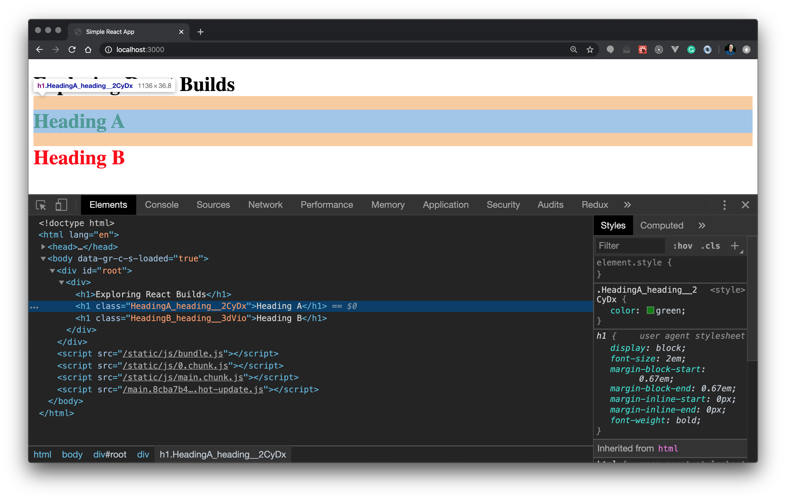
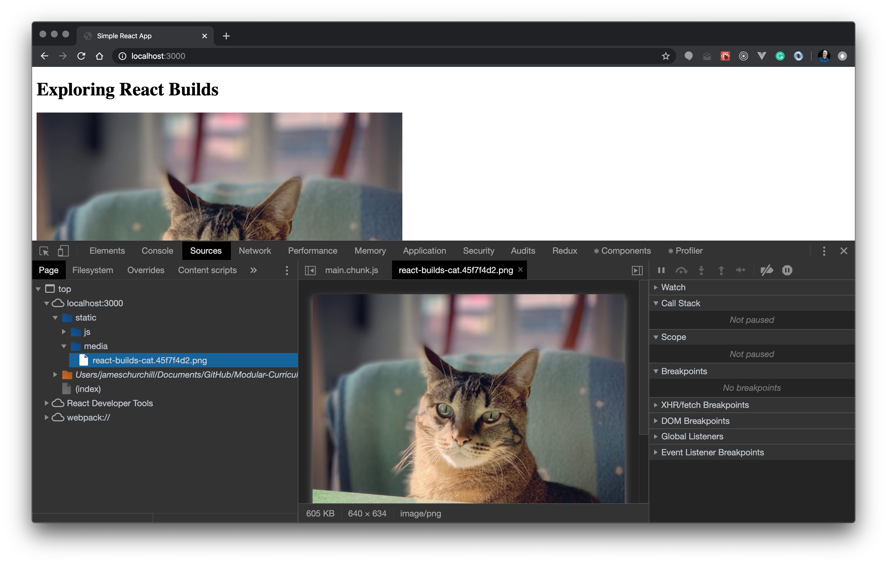
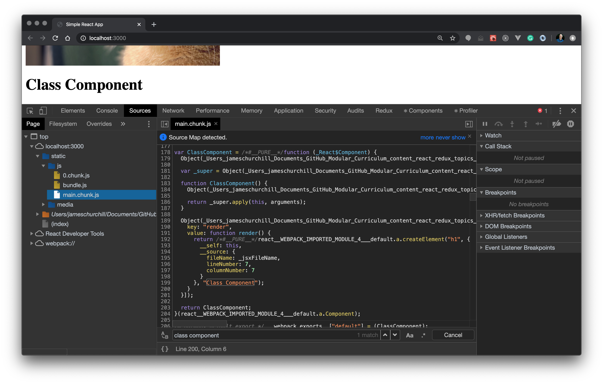
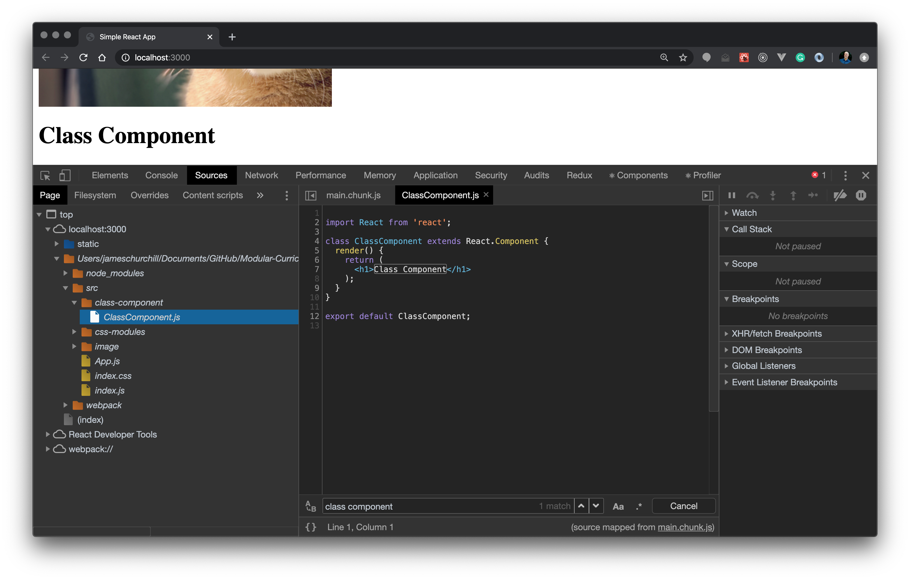
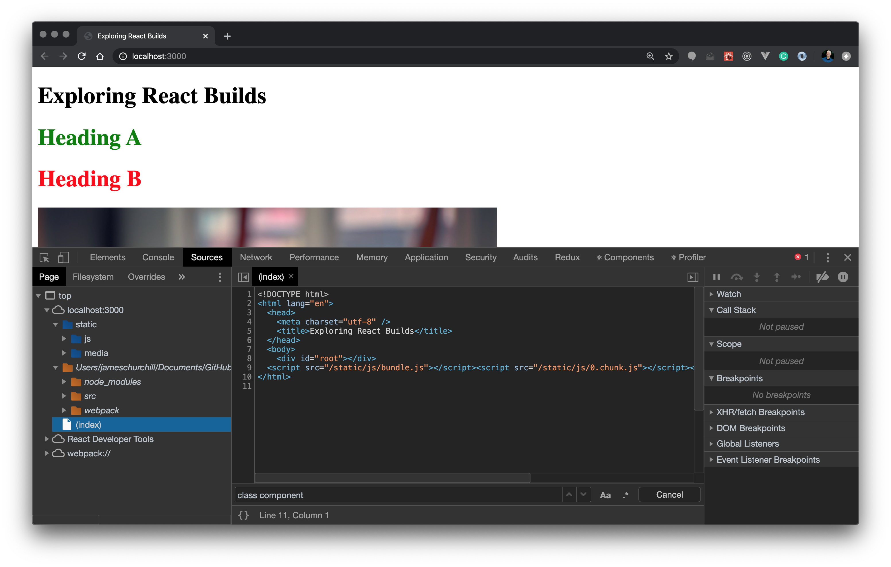
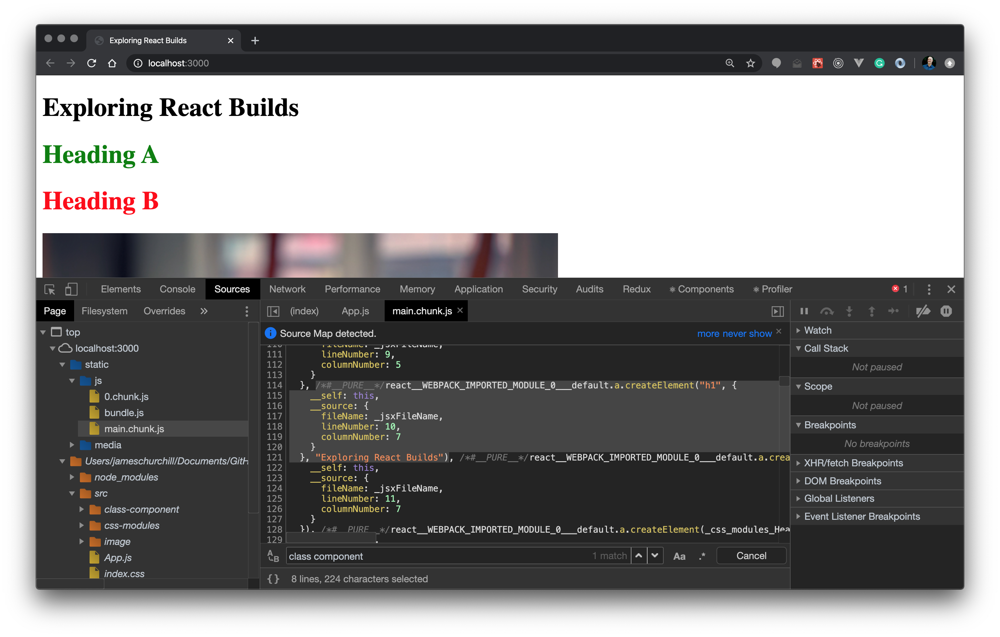

At this point, you know how to build and render frontend components with React.
Now it's time to learn about frontend routing so that you can connect specific
components to render at specific URL paths. After reading and practicing, you
should be able to:
react-router-dom package to set up React Router in your applications<Route> component from the react-router-dom<Link> and <NavLink> components fromreact-router-dom package<Switch> routes and manage the order of rendered componentsmatch prop to access router parametershistory prop to programmatically change the browser's<Redirect> component in a routeYou've been using Create React App to create and build React applications. While
you don't need to understand every detail of the frontend build process that
Create React App provides, having a general understanding will help you to take
full advantage of the features offered by the tool. After reading and
practicing, you should be able to:
npm startNow that you know how to render components in a React app, how do you handle
rendering different components for different website pages? React Router is the
answer!
Think of how you have created server-side routes in Express. Take the following
URL and server-side route. Notice how the /users/:userId path corresponds with
the http://localhost:3000/users/2 URL to render a specific HTML page.
// http://localhost:3000/users/2 app.get('/users/:userId', (req, res) => { res.render('userProfile.pug'); });
In the default React setup, you lose the ability to create routes in the same
manner as in Express. This is what React Router aims to solve!
React Router is a frontend routing library that allows you to control which
components to display using the browser location. A user can also copy and paste
a URL and email it to a friend or link to it from their own website.
When you finish this article, you should be able to use the following from the
react-router-dom library:
<BrowserRouter> to provide your application access to the react-router-dom<Route> to connect specific URL paths to specific components you want<Switch> to wrap several Route elements, rendering only one even ifmatch prop to access route path parameters.Since you are writing single page apps, you don't want to refresh the page each
time you change the browser location. Instead, you want to update the browser
location and your app's response using JavaScript. This is known as client-side
routing. You are using React, so you will use React Router to do this.
Create a simple react project template:
npx create-react-app my-app --template @appacademy/simple
Then install React Router:
npm install --save react-router-dom@^5.1.2
Now import BrowserRouter from react-router-dom in your entry file:
import { BrowserRouter } from 'react-router-dom`;
BrowserRouter is the primary component of the router that wraps your route
hierarchy. It creates a React context that passes routing information down to
all its descendent components. For example, if you want to give <App> and all
its children components access to React Router, you would wrap <App> like so:
// ./src/index.js import React from 'react'; import ReactDOM from 'react-dom'; import { BrowserRouter } from 'react-router-dom'; import App from './App'; const Root = () => { return ( <BrowserRouter> <App /> </BrowserRouter> ); }; ReactDOM.render( <React.StrictMode> <Root /> </React.StrictMode>, document.getElementById('root'), );
Now you can route the rendering of certain components to certain URLs (i.e
https://www.website.com/profile).
Alternatively, you could import and use HashRouter from react-router-dom.
Links for applications that use <HashRouter> would look like
https://www.website.com/#/profile (with an # between the domain and path).
You'll focus on using the <BrowserRouter>.
React Router helps your React application render specific components based on
the URL. The React Router component you'll use most often is <Route>.
The <Route> component is used to wrap another component, causing that
component to only be rendered if a certain URL is matched. The behavior of the
<Route> component is controlled by the following props: path, component,
exact, and render (optional).
Create a simple Users component that returns <h1>This is the users index!</h1>. Now let's refactor your index.js file so that you can create
your routes within the component:
// ./src/index.js import React from 'react'; import ReactDOM from 'react-dom'; import { BrowserRouter, Route } from 'react-router-dom'; import App from './App'; import Users from './Users'; const Root = () => { return ( <BrowserRouter> <div> {/* TODO: Routes */} </div> </BrowserRouter> ); }; ReactDOM.render( <React.StrictMode> <Root /> </React.StrictMode>, document.getElementById('root'), );
Note that BrowserRouter can only have a single child component, so the snippet
above wraps all routes within parent a <div> element. Now let's create some
routes!
Begin with the component prop. This prop takes a reference to the component to
be rendered. Let's render your App component:
const Root = () => { return ( <BrowserRouter> <div> <Route component={App} /> </div> </BrowserRouter> ); };
Now you'll need to connect a path to the component!
The wrapped component will only be rendered when the path is matched. The path
matches the URL when it matches some initial portion of the URL. For example, a
path of / would match both of the following URLs: / and /users. (Because
/users begins with a / it matches the path /)
<Route path='/' component={App} /> <Route path='/users' component={Users} />
Take a moment to navigate to http://localhost:3000/users to see how both the
App component and Users component are rendering.
If this exact flag is set, the path will only match when it exactly matches
the URL. Then browsing to the /users path would no longer match / and only
the Users component will be rendered (instead of both the App component and
Users component).
<Route exact path='/' component={App} /> <Route path='/users' component={Users} />
This is an optional prop that takes in a function to be called. The function
will be called when the path matches. The function's return value is rendered.
You could also define a functional component inside the component prop, but
this results in extra, unnecessary work for React. The render prop is
preferred for inline rendering of simple functional components.
The difference between using component and render is that component
returns new JSX to be re-mounted every time the route renders, while render
simply returns to JSX what will be mounted once and re-rendered. For any given
route, you should only use either the component prop, or the render prop. If
both are supplied, only the component prop will be used.
// This inline rendering will work, but is unnecessarily slow. <Route path="/hello" component={() => <h1>Hello!</h1>} /> // This is the preferred way for inline rendering. <Route path="/hello" render={() => <h1>Hello!</h1>} />
It can be helpful to use render instead of component in your <Route> when
you need to pass props into the rendered component. For example, imagine that
you needed to pass the users object as a prop to your Users component. Then
you could pass in props from Root to Users by returning the Users
component like so:
// `users` to be passed as a prop: const users = { 1: { name: 'Andrew' }, 2: { name: 'Raymond' } };
<Route path="/users" render={() => <Users users={users} />} />
As a reminder, BrowserRouter can only have a single child component. That's
why you have wrapped all your routes within parent a <div> element.
const Root = () => { const users = { 1: { name: 'Andrew' }, 2: { name: 'Raymond' } }; return ( <BrowserRouter> <div> <h1>Hi, I'm Root!</h1> <Route exact path="/" component={App} /> <Route path="/hello" render={() => <h1>Hello!</h1>} /> <Route path="/users" render={() => <Users users={users} />} /> </div> </BrowserRouter> ); };
With this Root component, you will always render the <h1>Hi, I'm Root!</h1>,
regardless of the path. Because of the first <Route>, you will only render the
App component if the path exactly matches /. Because of the second
<Route>, you will only render the Users component if the path matches
/users.
A component's props can also hold information about a URL's parameters. The
router will match route segments starting at : up to the next /, ?, or
#. Those matched values are then passed to components via their props. Such
segments are wildcard values that make up your route parameters.
For example, take the route below:
<Route path="/users/:userId"
render={(props) => <Profile users={users} {...props} />} />
The router would break down the full /users/:userId/photos path to two parts:
/users, :userId.
The Profile component's props would have access to the :userId part of the
http://localhost:3000/users/:userId/photos URL through the props with router
parameter information. You would access the the match prop's parameters
(props.match.params). If you are using the render prop of the Route
component, make sure to spread the props back into the component if you want it
to know about the "match" parameters.
// Route's `render` prop allows you to pass the `users` // prop and spread the router `props`. render={(props) => <Profile users={users} {...props} />}
The params object would then have a property of userId which would hold the
value of the :userId wildcard value. Let's render the userId parameter in
a user profile component. Take a moment to create a Profile.js file with the
following code:
// ./src/Profile.js import React from "react"; const Profile = (props) => ( <div> The user's id is {props.match.params.userId}. </div> ); export default Profile;
Notice how it uses the match prop to access the :userId parameter from the
URL. You can use this wildcard to make and AJAX call to fetch the user
information from the database and render the return data in the Profile
component. Recall that your Profile component was rendered at the path
/users/:userId. Thus you can use your userId parameters from match.params
to fetch a specific user:
// ./src/Profile.js import React from "react"; const Profile = ({ users, match: { params } }) => { // In a real-world scenario, you'd make a call to an API to fetch the user, // instead of passing down and keying into a `users` prop. const user = users[params.userId]; return ( <div> The user's id is {params.userId} and the user's name is {user.name}. </div> ); }; export default Profile;
Now that you've seen your React Router's match prop in action, let's go over
more about route props! React Router passes information to the components as
route props, accessible to all components with access to the React Router. The
three props it makes available are location, match and history. You've
learned about props.match.params, but now let's review the other properties of
the match prop!
This is an object that contains important information about how the current URL
matches the route path. Here are some of the more useful keys on the match
object:
isExact: a boolean that tells you whether or not the URL exactly matches theurl: the current URLpath: the route path it matched against (without wildcards filled in)params: the matches for the individual wildcard segments, nested under theirWhen you use React Router, the browser location and history are a part of
the state of your app. You can store information about which component should be
displayed, which user profile you are currently viewing, or any other piece of
state, in the browser location. You can then access that information from
anywhere your Router props are passed to in your app.
Now that you've learned about parameters and route props, let's revisit your
Root component to add an exact flag to your /users route so that it does
not render with your /users/:userId route. Your component should look
something like this:
const Root = () => { const users = { 1: { name: 'Andrew' }, 2: { name: 'Raymond' } }; return ( <BrowserRouter> <h1>Hi, I'm Root!</h1> <div> <Route exact path="/" component={App} /> <Route path="/hello" render={() => <h1>Hello!</h1>} /> {/* Render the `Users` page if no ID is included. */} <Route exact path="/users" render={() => <Users users={users} />} /> {/* Otherwise, render the profile page for that userId. */} <Route path="/users/:userId" component={(props) => <Profile users={users} {...props} />} /> </div> </BrowserRouter> ); };
In this article, you learned how to:
exact flag to ensure that a specific path renders a specificmatch prop to access Router params.Now that you know how to create front-end routes with React Router, you'll need
to implement a way for your users to navigate the routes! This is what using
React Router's Link, NavLink, Redirect, and history prop can help you
do.
In this article, you'll be working off of the demo project you built in the
React Router Intro reading. When you finish this article, you should be able to
use the following components from the react-router-dom library:
<Link> or <NavLink> to create links with absolute paths to routes in your<Redirect> to redirect a user to another path (i.e. a login page when thehistory prop to update a browser's URL programmatically.React Router's <Link> is one way to simplify navigation around your app. It
issues an on-click navigation event to a route defined in your app's router.
Using <Link> renders an anchor tag with a correctly set href attribute.
To use it, update your imports from the react-router-dom package to include
Link:
import { BrowserRouter, Route, Link } from 'react-router-dom';
Note that <Link> can take two props: to and onClick.
The to prop is a route location description that points to an absolute path,
(i.e. /users). Add the following Link components in your index.js file
above your routes:
<Link to="/">App</Link> <Link to="/users">Users</Link> <Link to="/users/1">Andrew's Profile</Link>
The onClick prop is just like any other JSX click handler. You can write a
function that takes in an event and handles it. Add the following Link
before your routes and the following click handler function within your Root
component:
// Link with onClick prop <Link to="/" onClick={handleClick}>App with click handler</Link>
// Click handler function const handleClick = () => { console.log('Thanks for clicking!') };
Now, test your routes and links! If you inspect the page, you'll see that your
links are now rendered as <a> elements. Notice that clicking the App with click handler link logs a message in your console while directing your browser
to render the App component.
The <NavLink> works just like a <Link>, but with a little extra
functionality. It has the ability to add extra styling when the path it links to
matches the current path. This makes it an ideal choice for a navigation bar,
hence the name. This styling can be controlled by three extra props:
activeClassName, activeStyle, and exact. To begin using NavLink, update
your imports from the react-router-dom package:
import { BrowserRouter, Route, NavLink } from 'react-router-dom';
The activeClassName prop of the NavLink component allows you to set a CSS
class name for styling the NavLink when its route is active. By default, the
activeClassName is already set to active. This means that you simply need to
add an .active class to your CSS file to add active styling to your link. A
NavLink will be active if its to prop path matches the current URL.
Let's change your "Users", "Hello", and "Andrew's Profile" links to be different
colors and have a larger font size when active.
<NavLink to="/">App</NavLink> <NavLink activeClassName="red" to="/users">Users</NavLink> <NavLink activeClassName="blue" to="/hello">Hello</NavLink> <NavLink activeClassName="green" to="/users/1">Andrew's Profile</NavLink> <NavLink to="/" onClick={handleClick}>App with click handler</NavLink>
For example, this is what the rendered HTML <a> tag would look like when when
the browser is navigated to the / path or the /users path:
<!-- Navigated to the / path (the activeClassName prop is set to active by default) --> <a href="/" class="active">App</a> <!-- NOT navigated to the `/` path --> <a href="/">App</a>
<!-- Navigated to the /users path (the activeClassName prop is manually set to red) --> <a href="/users" class="red">Users</a> <!-- NOT navigated to the `/users` path --> <a href="/users">Users</a>
Import NavLink into your index.js file and take a moment to update all your
Link elements to NavLink elements. Set an activeClassName prop to an
active class. Add the following .active class to your index.css file:
.active { font-weight: bold; } .red { color: red; font-size: 30px; } .blue { color: blue; font-size: 30px; } .green { color: green; font-size: 30px; }
Test your styled links! Notice how the App and App with click handler links
are always bolded. This is because all of your links include the / path,
meaning that the link to / will be active when browsing to /users and
/users/1 because of how users and users/1 are both prefaced by a /.
The activeStyle prop is a style object that will be applied inline to the
NavLink when its to prop matches the current URL. Add the following
activeStyle to your App link and comment out the .active class in your CSS
file.
<NavLink to="/" activeStyle={{ fontWeight: "bold" }}>App</NavLink>
The following html is rendered when at the / path:
<a href="/" style="font-weight:bold;" class="active">App</a>
Notice how your App with click handler is not bolded anymore. This is because
the default active class being applied does not have any CSS stylings set to
the class. Uncomment your .active class in your CSS file to bring back bolding
to this NavLink.
The exact prop is a boolean that defaults to false. If set to true, then
the activeStyle and activeClassName props will only be applied when the
current URL exactly matches the to prop. Update your App and App with click handler links with an exact prop set. Just like in your routes, you can use
the exact flag instead of exact={true}.
<NavLink to="/" exact={true} activeStyle={{ fontWeight: "bold" }}>App</NavLink> <NavLink to="/" exact onClick={handleClick}>App with click handler</NavLink>
Now your App and App with click handler links will only be bolded when you
have navigated precisely to the / path.
You came across styling issues when the /users and /users/1 paths matched
the / path. Routing can have this issue as well. This is why you need to
control the switching between routes.
React Router's <Switch> component allows you to only render one <Route> even
if several match the current URL. You can nest as many Routes as you wish
between the opening and closing Switch tags, but only the first one that
matches the current URL will be rendered.
This is particularly useful if you want a default component that will only
render if none of our other routes match. View the example below. Without the
Switch, DefaultComponent would always render. Since there isn't set a path in
the DefaultComponent route, it will simply use the default path of /. Now
the DefaultComponent will only render when neither of the preceding routes
match.
<Switch> <Route path="some/url" component={SomeComponent} /> <Route path="some/other/url" component={OtherComponent} /> <Route component={DefaultComponent} /> </Switch>
Import Switch from react-router-dom and add <Switch> tags around your
routes to take care of ordering and switching between your routes! Begin by
adding the following route to the bottom of your routes to render that a 404: Page not found message:
<Route render={() => <h1>404: Page not found</h1>} />
This is what your Root component should look like at this point:
const Root = () => { const users = [ { name: 'andrew' }, { name: 'raymond' } ]; const handleClick = () => { console.log('Thanks for clicking!') }; return ( <BrowserRouter> <h1>Hi, I'm Root!</h1> <div> <NavLink to="/" exact={true} activeStyle={{ fontWeight: "bold" }}>App</NavLink> <NavLink activeClassName="red" to="/users">Users</NavLink> <NavLink activeClassName="blue" to="/hello">Hello</NavLink> <NavLink activeClassName="green" to="/users/1">Andrew's Profile</NavLink> <NavLink to="/" exact onClick={handleClick}>App with click handler</NavLink> <Switch> <Route path="/users/:userId" component={(props) => <Profile users={users} {...props} />} /> <Route exact path="/users" render={() => <Users users={users} />} /> <Route path="/hello" render={() => <h1>Hello!</h1>} /> <Route exact path="/" component={App} /> <Route render={() => <h1>404: Page not found</h1>} /> </Switch> </div> </BrowserRouter> ); };
Now you have control over the precedence of rendered components! Try navigating
to http://localhost:3000/asdf or any other route you have not defined. The
<h1>404: Page not found</h1> JSX of the last <Route> will be rendered
whenever the browser attempts to visit an undefined route.
But what if you want to redirect users to a login page when they aren't logged
in? The <Redirect> component from React Router helps you redirect users!
The component takes only one prop: to. When it renders, it replaces the
current URL with the value of its to prop. Typically you conditionally render
<Redirect> to redirect the user away from some page you don't want them to
visit. The example below checks whether there is a defined currentUser prop.
If so, the <Route> will render the Home component. Otherwise, it will
redirect the user to the /login path.
<Route
exact path="/"
render={() => (this.props.currentUser ? <Home /> : <Redirect to="/login" />)}
/>
Note: you will learn how to use a more flexible auth pattern - don't directly
imitate this example.
You know how to redirect users with a <Redirect> component, but what if you
need to redirect users programmatically? You've learned about the React Router's
match prop, but now let's go over another one of the route props: history!
// Pushing a new URL (and adding to the end of history stack): const handleClick = () => this.props.history.push('/some/url'); // Replacing the current URL (won't be tracked in history stack): const redirect = () => this.props.history.replace('/some/other/url');
This prop lets you update the URL programmatically. For example, suppose you
want to push a new URL when the user clicks a button. It has two useful methods:
push - This adds a new URL to the end of the history stack. That means thatreplace - This replaces the current URL on the history stack, so the backIn this article, you learned how to:
<Redirect> component; andhistoryNow you know how to create front-end routes and add navigation with React
Router. When initializing Express projects, you declare static routes. Static
routes are routes that are declared when an application is initialized. When
using React Router in your application's initialization, you can declare dynamic
routes. React Router introduces dynamic routing, where your routes are created
as your application is rendering. This allows you to create nested routes within
components!
In this article, let's dive into nested routes! When you finish the article,
you should:
match prop to generate links and routes.Let's begin with why you might need nested routes. As you remember, you are
using React to create a single-page application. This means that you'll be
organizing your application into different components and sub-components.
For example, imagine creating a simple front-end application with three main
pages: a home welcome page (path of /), a users index page (path of /users),
and user profile pages (path of /users/:userId). Now imagine if every user had
links to separate posts and photos pages.
You can create those routes and links within the user profile component, instead
of creating the routes and links where the main routes are defined.
Now let's dive into a user profile component to understand what are nested
routes! Imagine you have a route in your application's entry file to each user's
profile like so:
<Route path="/users/:userId" component={Profile} />
This means that upon navigating to http://localhost:3000/users/1, you would
render the following Profile component and the userId parameter within
props.match.params would have the value of "1".
const Profile = (props) => { // Custom call to database to fetch a user by a user ID. const user = fetchUser(props.match.params.userId); const { name, id } = user; return ( <div> <h1>Welcome to the profile of {name}!</h1> {/* Links to a specific user's posts and photos */} <Link to={`/users/${id}/posts`}>{name}'s Posts</Link> <Link to={`/users/${id}/photos`}>{name}'s Photos</Link> {/* Routes to a specific user's posts and photos */} <Route path='/users/:userId/posts' component={UserPosts} /> <Route path='/users/:userId/photos' component={UserPhotos} /> </div> ); };
Since this route is not created until the Profile component is rendered, you
are dynamically creating your nested /users/:userId/posts and
/users/:userId/photos routes. Remember that your match prop also has other
helpful properties. You can use match.url instead of /users/${id} in your
profile links. You can also use match.path instead of /users/:userId in your
profile routes. Remember that you can destructure url, path, and params
from your match prop!
// Destructure `match` prop const Profile = ({ match: { url, path, params }) => { // Custom call to database to fetch a user by a user ID. const user = fetchUser(params.userId); const { name, id } = user; return ( <div> <h1>Welcome to the profile of {name}!</h1> {/* Replaced `/users/${id}` URL with `props.match.url` */} <Link to={`${url}/posts`}>{name}'s Posts</Link> <Link to={`${url}/photos`}>{name}'s Photos</Link> {/* Replaced `/users/:userId` path with `props.match.path` */} <Route path={`${path}/posts`} component={UserPosts} /> <Route path={`${path}/photos`} component={UserPhotos} /> </div>} ); };
In tomorrow's project, you'll build a rainbow of routes as well as define nested
routes. In the future, you may choose to implement nested routes to keep your
application's routes organized within related components.
In this article, you learned:
A "build" is the process of converting code into something that can actually
execute or run on the target platform. A "front-end build" is a process of
preparing a front-end or client-side application for the browser.
With React applications, that means (at a minimum) converting JSX to something
that browsers can actually understand. When using Create React App, the build
process is automatically configured to do that and a lot more.
When you finish this article, you should be able to:
npm start; andThe need for front-end builds predates React. Over the years, developers have
found it helpful to extend the lowest common denominator version of JavaScript
and CSS that they could use.
Sometimes developers extend JavaScript and CSS with something like
TypeScript or Sass. Using these non-standard languages and
syntaxes require you to use a build process to convert your code into standard
JavaScript and CSS that can actually run in the browser.
Browser-based applications also require a fair amount of optimization to deliver
the best, or at least acceptable, experience to end users. Front-end build
processes could be configured to lint code, run unit tests, optimize images,
minify and bundle code, and more--all automatically at the press of a button
(i.e. running a command at the terminal).
Developers are generally an impatient lot. When new features are added to
JavaScript, we don't like to wait for browsers to widely support those features
before we start to use them in our code. And we really don't like when we have
to support older, legacy versions of browsers.
In recent years, JavaScript has been updated on a yearly basis and browser
vendors do a decent job of updating their browsers to support the new features
as they're added to the language. Years ago though, there was an infamous delay
between versions 5 and 6 of JavaScript. It took years before ES6 (or ES2015 as
it eventually was renamed to) to officially be completed and even longer before
browsers supported all of its features.
In the period of time before ES2015 was broadly supported by browsers,
developers used front-end builds to convert or transpile ES2015 features and
syntax to an older version of the language that was more broadly supported by
browsers (typically ES5). The transpilation from ES2015/ES6 down to ES5 was one
of the major drivers for developers to add front-end builds to their client-side
projects.
When learning about front-end or React builds, you'll encounter a lot of
terminology that you may or may not be familiar with. Here's some of the
terminology that you'll likely encounter:
Linting is process of using a tool to analyze your code to catch common
programming errors, bugs, stylistic inconsistencies, and suspicious coding
patterns. ESLint is a popular JavaScript linting tool.
Transpilation is the process of converting source code, like JavaScript,
from one version to another version. Usually this means converting newer
versions of JavaScript, ES2019 or ES2021, to a version
that's more widely supported by browsers, like ES2015, or even
ES5 or ES3 (if you need to support the browser that your parents
or grandparents use).
Minification is the process of removing all unnecessary characters in your
code (e.g. white space characters, new line characters, comments) to produce an
overall smaller file. Minification tools will often also rename identifers in
your code (i.e. parameter and variable names) in the quest for smaller and
smaller file sizes. Source maps can also be generated to allow debugging tools
to cross reference between minified code and the original source code.
Bundling is the process of combining multiple code files into a single file.
Creating a bundle (or a handful of bundles) reduces the number of requests that
a client needs to make to the server.
Tree shaking is the process of removing unused (or dead) code from your
application before it's bundled. Tree shaking external dependencies can
sometimes have a dramatic positive impact on overall bundled file sizes.
Front-end build tools have come and gone over the years; sometimes very quickly,
which helped bring about the phenomenon known as JavaScript fatigue.
Configuration based tools allow you to create your build tasks by declaring
(usually using JSON, XML, or YAML) what you want to be done, without explicitly
writing every step in the process. In contrast, coding or scripting based tools
allow you to, well, write code to create your build tasks. Configuration based
tools can sometimes feel simpler to use while giving up some control (at least
initially) while coding based tools can feel more familiar and predictable
(since you're describing tasks procedurally). Every generalization is false
though (including this one), so there are plenty of exceptions.
Grunt is a JSON configuration based task runner that can be used to
orchestrate the various tasks that make up your front-end build. Grunt was very
quickly supplanted by Gulp, which allowed developers to write JavaScript
to define front-end build tasks. After Gulp, the front-end tooling landscape
became a bit more muddled. Some developers preferred the simplicity of using
npm scripts to define build tasks while others preferred the power of
configuration based bundlers like webpack.
As front-end or client-side applications grew in complexity, developers found
themselves wanting to leverage more advanced JavaScript features and newer
syntax like classes, arrow functions, destructuring, async/await, etc. Using a
code transpiler, like Babel, allows you to use all of the latest and
greatest features and syntax without worrying about what browsers support what.
Module loaders and bundlers, like webpack, also allowed developers to use
JavaScript modules without requiring users to use a browser that natively
supports ES modules. Also, module bundling (along with minification and
tree-shaking) helps to reduce the bandwidth that's required to deliver the
assets for your application to the client.
[Create React App][cra] uses webpack (along with Babel) under the covers to
build your React applications. Even if you're not using Create React App,
webpack and Babel are still very popular choices for building React
applications.
Running an application created by Create React App using npm start can feel
magical. Some stuff happens in the terminal and your application opens into your
default browser. Even better, when you make changes to your application, your
changes will (usually) automatically appear in the browser!
At a high level, here's what happens when you run npm start:
webpack-dev-server is started;webpack-dev-server compiles your application;index.html file is loaded into the browser; andCreate React App provides a script that you can run to "eject" your application
from the Create React App tooling. When you eject your application, all of the
hidden stuff is exposed so that you can review and customize it.
The need to customize Create React App rarely happens. Also, don't eject an
actual project as it's a one-way trip! Once a Create React App project has
been ejected, there's no going back (though you could always undo the ejection
process by reverting to an earlier commit if you're using source control).
To eject your application from Create React App, run the command npm run eject. You'll be prompted if you want to continue; type "y" to continue with
the ejection process. Once the ejection process has completed, you can review
the files that were previously hidden from you.
In the package.json file, you'll see the following npm scripts:
{ "scripts": { "start": "node scripts/start.js", "build": "node scripts/build.js", "test": "node scripts/test.js" } }
You can open the ./scripts/start.js file to see the code that's executed when
you run npm start.
If you're curious about the webpack configuration, you can open and review the
./config/webpack.config.js.
Before you deploy your application to production, you'll want to make sure that
you've replaced static values in your code with environment variables and
considered what browsers you need to support.
Create React App supports defining environment variables in an .env file. To
define an environment variable, add an .env file to your project and define
one or more variables that start with the prefix REACT_APP_:
REACT_APP_FOO: some value
REACT_APP_BAR: another value
Environment variables can be used in code like this:
console.log(process.env.REACT_APP_FOO);
You can also reference environment variables in your index.html like this:
<title>%REACT_APP_BAR%</title>
Important: Environment variables are embedded into your HTML, CSS, and
JavaScript bundles during the build process. Because of this, it's very
important to not store any secrets, like API keys, in your environment
variables as anyone can view your bundled code in the browser by inspecting
your files.
In your project's package.json file, you can see the list of targeted
browsers:
{ "browserslist": { "production": [ ">0.2%", "not dead", "not op_mini all" ], "development": [ "last 1 chrome version", "last 1 firefox version", "last 1 safari version" ] } }
Adjusting these targets affect how your code will be transpiled. Specifying
older browser versions will result in your code being transpiled to older
versions of JavaScript in order to be compatible with the specified browser
versions. The production list specifies the browsers to target when creating a
production build and the development list specifics the browsers to target
when running the application using npm start.
The browserl.ist website can be used to see the browsers supported by your
configured browserslist.
To create a production build, run the command npm run build. The production
build process bundles React in production mode and optimizes the build for the
best performance. When the command completes, you'll find your production ready
files in the build folder.
Now your application is ready to be deployed!
For more information about how to deploy a Create React App project into
production, see this page in the official documentation.
In this article, you learned how to:
npm start; andNow that you've had an introduction to React Router, feel free to explore the
official documentation to learn more! As you become a full-fledged software
engineer, remember that documentation is your friend. You can take a brief
overview for now, as the documentation might include a lot of information at
first. The more you learn about React, the more you should revisit the official
documentation and learn!
Today you're going to get our first experience using React Router. The goal is
to create a basic app that displays the colors of the rainbow. This rainbow,
however, has something special about it - some of the colors are nested within
others.
Begin by creating a new React project:
npx create-react-app rainbow-routes --template @appacademy/simple
Now you'll remove all the contents of your src and all the contents from your
public directory to build the application architecture from scratch! After you
have deleted all your files within the directories, create a new index.html
file in your public folder. Use the html:5 emmet shortcut to generate an
HTML template. Title your page "Rainbow Routes" and create a div with an id
of root in your DOM's <body> element. Create an index.css file in your
src directory with the following code. Now let's create your entry file!
h4 { color: darkblue; cursor: pointer; } h4:hover { text-decoration: underline; } #rainbow { position: absolute; top: 0; left: 300px; } h3 { position: absolute; top: 1px; } .red { background-color: red; width: 100px; height: 100px; } .orange { background-color: orange; width: 100px; height: 50px; } .yellow { background-color: yellow; width: 100px; height: 50px; } .green { background-color: green; width: 100px; height: 100px; } .blue { background-color: blue; width: 100px; height: 100px; } .indigo { background-color: mediumslateblue; width: 100px; height: 50px; } .violet { background-color: darkviolet; width: 100px; height: 100px; } a { display: block; margin-bottom: 10px; }
Create an index.js entry file in the src directory. At the top of the file,
make sure to import React from the react package and ReactDOM from the
react-dom package. Make sure to also import your the index.css file you just
created! This will take care of styling your rainbow routes.
Now you can use the ReactDOM.render() method to render a <Root /> component
instead of the DOM element with an id of root. Lastly, wrap your render
function with a DOMContentLoaded event listener, like so:
document.addEventListener('DOMContentLoaded', () => { ReactDOM.render( <Root />, document.getElementById('root'), ); });
Let's create your Root component right in your entry file! Your Root
component will take care of applying your BrowserRouter to the application.
Applying the BrowserRouter to your Root component allows all the child
components rendering within <BrowserRouter> tags to use and access the Route,
Link, and NavLink components within the react-router-dom package.
const Root = () => ( // TODO: Apply BrowserRouter // TODO: Render rainbow );
Install the react-router-dom package:
npm install react-router-dom@^5.0.0
Now import BrowserRouter from the react-router-dom package, like so:
import { BrowserRouter } from 'react-router-dom';
You're going to be rendering a lot of components, so let's keep your src
directory organized by creating a components directory within. Within your new
./src/components directory, create a Rainbow.js file for your Rainbow
component with the following code:
// ./src/components/Rainbow.js import React from 'react'; import { Route, Link, NavLink } from 'react-router-dom'; const Rainbow = () => ( <div> <h1>Rainbow Router!</h1> {/* Your links should go here */} <div id="rainbow"> {/* Your routes should go here */} </div> </div> ); export default Rainbow;
Your Rainbow component will act as the home page or default path (/) of your
application. Import the Rainbow component into your entry file and have your
Root component render <Rainbow /> wrapped within <BrowserRouter> tags,
like so:
const Root = () => ( <BrowserRouter> <Rainbow /> </BrowserRouter> );
Within your Rainbow component, you'll be rendering <NavLink> and <Route>
components to add different navigation paths to different components. Let's
create all the components you will render!
Create files for the following components in your ./src/components directory:
RedBlueGreenIndigoOrangeVioletYellowYour Red and Blue components will look something like this:
import React from 'react'; import { Route, Link, NavLink } from 'react-router-dom'; const Color = () => ( <div> <h2 className="color">Color</h2> {/* Links here */} {/* Routes here */} </div> ); export default Color;
Your Green, Indigo, Orange, Violet, and Yellow components will look
something like this:
import React from 'react'; const Color = () => ( <div> <h3 className="color">Color</h3> </div> ); export default Color;
Now start your server and verify you can see the "Rainbow Router!" header from
your Rainbow component. Currently there is no functionality. Let's fix that!
As a reminder, wrapping the Rainbow component in <BrowserRouter> tags makes
the router available to all descendent React Router components. Now open the
Rainbow.js file. You're going to render some of your color components from
here. Ultimately you want your routes to look like this.
| URL | Components |
|---|---|
/ |
Rainbow |
/red |
Rainbow -> Red |
/red/orange |
Rainbow -> Red -> Orange |
/red/yellow |
Rainbow -> Red -> Yellow |
/green |
Rainbow -> Green |
/blue |
Rainbow -> Blue |
/blue/indigo |
Rainbow -> Blue -> Indigo |
/violet |
Rainbow -> Violet |
This means that the Red, Green, Blue, and Violet components need to
render in the Rainbow component, but only when you are at the corresponding
URL. You'll do this with Route components. Begin by importing the Red,
Green, Blue, and Violet components into your Rainbow.js file. Then add
the necessary Route components inside the div with id="rainbow" in the
Rainbow component. For example to render the Red component with the /red
path, you would use the following Route component:
<Route path="/red" component={Red} />
Test that your code works! Manually type in each URL you just created, and you
should see the color component pop up. Remember, these are React Routes, so the
paths you created will come after the /. For example, your default rainbow
route will look like http://localhost:3000/ while your red route will look
like http://localhost:3000/red.
You want to nest the Orange and Yellow components inside the Red
component, and the Indigo component inside the Blue component. Remember to
import your components to use them in a Route tag. You'll have to go add the
corresponding Route tags to the Red.js and Blue.js files. Make sure to use
the correct nested paths, such as "/red/orange" for the orange Route.
Manually navigating to our newly created routes is tiresome, so let's add
functionality to take care of this process for us. React Router provides the
Link and NavLink components for this purpose.
Add Links to the paths /red, /green, /blue, and /violet in the
Rainbow component. For example, your red link should look like
<Link to="/red">Red</NavLink>
When you are at blue you want to be able to get to /blue/indigo, and then
back to /blue. Add the corresponding Links to the Blue component like
this:
<Link to='/blue' >Blue only</Link> <Link to='/blue/indigo' >Add indigo</Link>
Similarly, add Links to /red, /red/orange and /red/yellow to the Red
component. Test all your links. Navigation is so much easier now!
It would be nice if our links gave us some indication of which route you were
at. Fortunately, React Router has a special component for that very purpose:
NavLink. NavLinks get an extra CSS class when their to prop matches the
current URL. By default this class is called active.
Go ahead and switch all your Links to NavLinks. If you open the app you
won't see any change yet. That's because you haven't added any special styling
to the active class. Go ahead and open the index.css file. Create an
.active class and add the line font-weight: 700. Now your active links will
be bold. Isn't that nice!
The only problem is that now the Blue only link is active even when the path
is /blue/indigo. That doesn't make a lot of sense. Let's add the exact flag
to that link so it will only be active when its to exactly matches the current
path. Now it should look like:
<NavLink exact to="/blue"> Blue only </NavLink>
Do the same for the Red only link. Everything should be working now.
You've already set up NavLink to bold the link text using the .active
class in src/index.css. But what if you wanted this class to be something
else? For instance, what if you want your main color links (Red, Green, Blue,
Violet) to be styled differently when active than your sub-route links (Red
Only, Add Orange, Add Yellow, etc.).
You can set the class that React Router sets to an active NavLink by adding
the activeClassName prop.
For instance, when we are at a route matching the below NavLink's to prop,
the component will have a class of .parent-active applied:
<NavLink to="/blue" activeClassName="parent-active" > Blue </NavLink>
This allows much more flexibility to style an active NavLink!
Using the example above, add an activeClassName prop to each of your
NavLinks in src/components/Rainbow.js. Now, add some CSS styling for that
class in your src/index.css to distinguish your main and your sub-route links.
Compare your work to the solution and make sure the behavior is the same. Time
to celebrate! ✨ 🌈 ✨
You can also learn more about using the React Router at reacttraining.com!
In this project, you'll use Create React App to create a simple React
application. You'll experiment with some of the features that Create React App
provides and deploy a production build of your application to a standalone
Express application.
Begin by using the create-react-app package to create a React application:
npx create-react-app exploring-react-builds --template @appacademy/simple
Remember that using the
create-react-appcommand initializes your project
as a Git repository. If you use thels -ato view the hidden files in your
project, you'll see the.gitfile.
Update the App component:
<h1> element with a <div> element; and<h1> element content to something like "Exploring React Builds".// ./src/App.js import React from 'react'; function App() { return ( <div> <h1>Exploring React Builds</h1> </div> ); } export default App;
You've already seen an example of using the import keyword to import a
stylesheet into a module so that it'll be included in your application build.
That's the technique being used to include the global index.css stylesheet:
// ./src/index.js import React from 'react'; import ReactDOM from 'react-dom'; import './index.css'; import App from './App'; ReactDOM.render( <React.StrictMode> <App /> </React.StrictMode>, document.getElementById('root') );
You can also leverage CSS modules in your Create React App
projects. CSS Modules scope stylesheet class names so that they are unique to a
specific React component. This allows you to create class names without having
to worry if they might collide with class names used in another component.
Add a new css-modules folder to the src folder. Within that folder, add the
following files:
HeadingA.jsHeadingA.module.cssHeadingB.jsHeadingB.module.cssThen update the contents of each file to the following:
// ./src/css-modules/HeadingA.js import React from 'react'; import styles from './HeadingA.module.css'; function HeadingA() { return ( <h1 className={styles.heading}>Heading A</h1> ); } export default HeadingA;
/* ./src/css-modules/HeadingA.module.css */ .heading { color: green; }
// ./src/css-modules/HeadingB.js import React from 'react'; import styles from './HeadingB.module.css'; function HeadingB() { return ( <h1 className={styles.heading}>Heading B</h1> ); } export default HeadingB;
/* ./src/css-modules/HeadingB.module.css */ .heading { color: red; }
Notice how the .heading CSS class name is being used within each component to
set the color of the <h1> element. For the HeadingA component, the color is
green, and for the HeadingB component, the color is red. Using the file
naming convention [name].module.css let's Create React App know that we want
these stylesheets to be processed as CSS Modules. Using CSS Modules allows the
.heading class name to be reused across components without any issue.
To see this feature in action, update your App component to render both of
your new components:
import React from 'react'; import HeadingA from './css-modules/HeadingA'; import HeadingB from './css-modules/HeadingB'; function App() { return ( <div> <h1>Exploring React Builds</h1> <HeadingA /> <HeadingB /> </div> ); } export default App;
Then run your application (npm start) to see "Heading A" and "Heading B"
displayed respectively in green and red. If you use the browser's developer
tools to inspect "Heading A", you'll see that the .heading class name has been
modified so that it's unique to the HeadingA component:

CSS Modules is an example of how a front-end build process can be used to modify
code to enable a feature that's not natively supported by browsers.
Create React App configures webpack with support for loading images (as well as
CSS, fonts, and other file types). What this means, for you as the developer, is
that you can add an image file to your project, import it directly into a
module, and render it in a React component.
Download any image of off the Web or click here to download
the below image.
Then within the src folder add a new folder named image. Within that folder
add a new component file named Image.js. Also add your downloaded image file
to the image folder (so it's a sibling to the Image.js file).
Update the contents of the Image.js file to this:
// ./src/image/Image.js import React from 'react'; import cat from './react-builds-cat.png'; console.log(cat); // /static/media/react-builds-cat.45f7f4d2.png function Image() { // Import result is the URL of your image. return <img src={cat} alt="images/images/Cat" />; } export default Image;
You can import an image into a component using the import keyword. This tells
webpack to include the image in the build. Notice that when you import an image
into a module, you'll get a path to the image's location within the build. You
can use this path to set the src attribute on an <img> element.
Be sure to update the image
importstatement to the correct file name if
you're using your own image!
Now update the App component to import and render the Image component:
// ./src/App.js import React from 'react'; import HeadingA from './css-modules/HeadingA'; import HeadingB from './css-modules/HeadingB'; import Image from './image/Image'; function App() { return ( <div> <h1>Exploring React Builds</h1> <HeadingA /> <HeadingB /> <Image /> </div> ); } export default App;
If you run your application (npm start) you'll see your image displayed on the
page! You can also open your browser's developer tools and view the "Sources"
for the current page. If you can expand the localhost:3000 > static >
media node on the left, you can see the image file that webpack copied to your
build.

You can also reference images in your CSS files too. Add a CSS file named
Image.css to the ./src/image folder and update its contents to this:
/* ./src/image/Image.css */ .cat { background-image: url(./react-builds-cat.png); width: 400px; height: 400px; }
Then update the Image component to this:
// ./src/image/Image.js import React from 'react'; import './Image.css'; import cat from './react-builds-cat.png'; console.log(cat); // /static/media/react-builds-cat.45f7f4d2.png function Image() { return ( <div> {/* Import result is the URL of your image. */} <img src={cat} alt="Cat" /> <div className='cat'></div> </div> ); } export default Image;
Now you'll see the image displayed twice on the page!
Earlier you learned about the browerslist setting in the package.json file
and now adjusting these targets affect how your code will be transpiled:
{ "browserslist": { "production": [ ">0.2%", "not dead", "not op_mini all" ], "development": [ "last 1 chrome version", "last 1 firefox version", "last 1 safari version" ] } }
The production list specifies the browsers to target when creating a
production build and the development list specifics the browsers to target
when running the application using npm start. Currently, you're targeting
relatively recent versions of the major browsers when creating a development
build. Targeting older browser versions results in your code being transpiled to
an older version of JavaScript.
To experiment with this configuration option, let's add a class component to the
project. Add a new folder named class-component to the src folder. Within
that folder, add a file named ClassComponent.js containing the following code:
// ./src/class-component/ClassComponent.js import React from 'react'; class ClassComponent extends React.Component { render() { return ( <h1>Class Component</h1> ); } } export default ClassComponent;
Don't forget to update your App component to render the new component:
// ./src/App.js import React from 'react'; import HeadingA from './css-modules/HeadingA'; import HeadingB from './css-modules/HeadingB'; import Image from './image/Image'; import ClassComponent from './class-component/ClassComponent'; function App() { return ( <div> <h1>Exploring React Builds</h1> <HeadingA /> <HeadingB /> <Image /> <ClassComponent /> </div> ); } export default App;
Now run your application using npm start. Open your browser's developer tools
and view the "Sources" for the current page. Expand the localhost:3000 >
static > js node on the left and select the main.chunk.js file. Press
CMD+F on macOS or CTRL+F on Windows to search the file for "Class
Component". Here's what the transpiled code looks like for the ClassComponent
class:
class ClassComponent extends react__WEBPACK_IMPORTED_MODULE_0___default.a.Component { render() { return /*#__PURE__*/react__WEBPACK_IMPORTED_MODULE_0___default.a.createElement("h1", { __self: this, __source: { fileName: _jsxFileName, lineNumber: 7, columnNumber: 7 } }, "Class Component"); } }
Have you wondered yet why you need to use the developer tools to view the
bundles generated by Create React App? Remember that when you runnpm start,
Create React App builds your application usingwebpack-dev-server. To keep
things as performant as possible, the bundles generated by
webpack-dev-serverare stored in memory instead of writing them to the
file system.
The JSX in the component's render method has been converted to JavaScript but
the ClassComponent ES2015 class is left alone. This makes sense though as JSX
isn't natively supported by any browser while ES2015 classes have been natively
supported by browsers for awhile now.
But what if you need to target a version of a browser that doesn't support
ES2015 classes? You can use the "Can I use..." website to
see when browsers started supporting ES2105 (or ES6) classes. Starting with
version 49, Chrome natively supported classes. But imagine that you need to
support Chrome going back to version 30, a version of Chrome that doesn't
support classes.
Change the browserslist.development property in the package.json file to
this:
{ "browserslist": { "production": [ ">0.2%", "not dead", "not op_mini all" ], "development": [ "chrome >= 30", "last 1 firefox version", "last 1 safari version" ] } }
The query chrome >= 30 specifies that you want to target Chrome version 30 or
newer.
The browserl.ist website can be used to see the browsers supported by your
configuredbrowserslist.
Stop your application if it's currently running. Delete the
./node_modules/.cache folder and run npm start again. Then view the
main.chunk.js bundle again in the developer tools:

Now your ES2015 class component is being converted to a constructor function!
Here's the transpiled code for reference:
var ClassComponent = /*#__PURE__*/function (_React$Component) { Object(_Users_jameschurchill_Documents_GitHub_Modular_Curriculum_content_react_redux_topics_react_builds_projects_exploring_react_builds_solution_node_modules_babel_preset_react_app_node_modules_babel_runtime_helpers_esm_inherits__WEBPACK_IMPORTED_MODULE_2__["default"])(ClassComponent, _React$Component); var _super = Object(_Users_jameschurchill_Documents_GitHub_Modular_Curriculum_content_react_redux_topics_react_builds_projects_exploring_react_builds_solution_node_modules_babel_preset_react_app_node_modules_babel_runtime_helpers_esm_createSuper__WEBPACK_IMPORTED_MODULE_3__["default"])(ClassComponent); function ClassComponent() { Object(_Users_jameschurchill_Documents_GitHub_Modular_Curriculum_content_react_redux_topics_react_builds_projects_exploring_react_builds_solution_node_modules_babel_preset_react_app_node_modules_babel_runtime_helpers_esm_classCallCheck__WEBPACK_IMPORTED_MODULE_0__["default"])(this, ClassComponent); return _super.apply(this, arguments); } Object(_Users_jameschurchill_Documents_GitHub_Modular_Curriculum_content_react_redux_topics_react_builds_projects_exploring_react_builds_solution_node_modules_babel_preset_react_app_node_modules_babel_runtime_helpers_esm_createClass__WEBPACK_IMPORTED_MODULE_1__["default"])(ClassComponent, [{ key: "render", value: function render() { return /*#__PURE__*/react__WEBPACK_IMPORTED_MODULE_4___default.a.createElement("h1", { __self: this, __source: { fileName: _jsxFileName, lineNumber: 7, columnNumber: 7 } }, "Class Component"); } }]); return ClassComponent; }(react__WEBPACK_IMPORTED_MODULE_4___default.a.Component);
Luckily it's very rare that you'll need to read the code in your generated
bundles. webpack, by default, is configured to generate sourcemaps. Sourcemaps
are a mapping of the code in a generated file, like a bundle file, to the
original source code. This gives you access to your original source code in the
browser's developer tools:

You can even set a breakpoint in your source within the developer tools to stop
execution on a specific line of code!
Earlier you learned that Create React App supports defining environment
variables in an .env file. This gives you a convenient way to avoid hard
coding values that vary across environments.
Let's experiment with this feature so that you can see how the Create React App
build process embeds environment variables into your HTML, CSS, and JavaScript
bundles.
Add an .env file to the root of your Create React App project. Define an
environment variable named REACT_APP_TITLE:
REACT_APP_TITLE=Exploring React Builds
Remember that environment variables need to be prefixed with REACT_APP_ for
Create React App to process them. After defining your environment variable,
you can refer to it within JSX using an expression and process.env:
// ./src/App.js import React from 'react'; import HeadingA from './css-modules/HeadingA'; import HeadingB from './css-modules/HeadingB'; import Image from './image/Image'; import ClassComponent from './class-component/ClassComponent'; function App() { return ( <div> <h1>{process.env.REACT_APP_TITLE}</h1> <HeadingA /> <HeadingB /> <Image /> <ClassComponent /> </div> ); } export default App;
Environment variables can also be referred to in regular JavaScript code:
console.log(process.env.REACT_APP_TITLE);
You can also reference environment variables in your ./public/index.html file
like this:
<!DOCTYPE html> <html lang="en"> <head> <meta charset="utf-8" /> <title>%REACT_APP_TITLE%</title> </head> <body> <div id="root"></div> </body> </html>
Run your application again using npm start. Open your browser's developer
tools and view the "Sources" for the current page. Expand the localhost:3000
node on the left and select (index). Notice that the text %REACT_APP_TITLE%
within the <title> element has been converted to the text literal Exploring React Builds:

If you expand the localhost:3000 > static > js node on the left and select
the main.chunk.js file, you can see how the App component's JSX has been
converted to JavaScript:

Here's a closer look at the relevant React.createElement method call:
/*#__PURE__*/react__WEBPACK_IMPORTED_MODULE_0___default.a.createElement("h1", { __self: this, __source: { fileName: _jsxFileName, lineNumber: 10, columnNumber: 7 } }, "Exploring React Builds")
Again, notice how the environment variable has been replaced with a text
literal. This has important security implications for you to consider. Because
environment variables are embedded into your HTML, CSS, and JavaScript bundles
during the build process, it's very important to not store any secrets, like
API keys, in your environment variables. Remember, anyone can view your bundled
code in the browser by inspecting your files!
In the last phase of this project, let's add routing to the React application,
create a production build, and deploy the build to an Express application!
To add React Router to the application, start by installing the
react-router-dom npm package:
npm install react-router-dom@^5.0.0
Then update the App component to this code:
// ./src/App.js import React from 'react'; import { BrowserRouter, Switch, Route, Link } from 'react-router-dom'; import HeadingA from './css-modules/HeadingA'; import HeadingB from './css-modules/HeadingB'; import Image from './image/Image'; import ClassComponent from './class-component/ClassComponent'; function App() { return ( <BrowserRouter> <div> <h1>{process.env.REACT_APP_TITLE}</h1> <nav> <ul> <li> <Link to="/">Home</Link> </li> <li> <Link to="/image">Image</Link> </li> <li> <Link to="/class-component">Class Component</Link> </li> </ul> </nav> <Switch> <Route path="/image"> <Image /> </Route> <Route path="/class-component"> <ClassComponent /> </Route> <Route path="/"> <HeadingA /> <HeadingB /> </Route> </Switch> </div> </BrowserRouter> ); } export default App;
Be sure to run and test your application to ensure that the defined routes work
as expected:
/ - Should display the HeadingA and HeadingB components;/image - Should display the Image component; and/class-component - Should display the ClassComponent component.To create a production build, run the command npm run build from the root of
your project. The output in the terminal should look something like this:
> solution@0.1.0 build [absolute path to your project] > react-scripts build Creating an optimized production build... Compiled successfully. File sizes after gzip: 47.83 KB build/static/js/2.722c16c4.chunk.js 773 B build/static/js/runtime-main.b7d1e5ee.js 745 B build/static/js/main.12299197.chunk.js 197 B build/static/css/main.e9a0d1f8.chunk.css The project was built assuming it is hosted at /. You can control this with the homepage field in your package.json. The build folder is ready to be deployed. You may serve it with a static server: npm install -g serve serve -s build Find out more about deployment here: bit.ly/CRA-deploy
Ignore the comments about using serve to deploy your application (i.e. npm install -g serve and serve -s build). In the next step, you'll create a
simple Express application to server your React application.
Create a new folder for your Express application outside of the Create React App
project folder.
For example, from the root of your project, use
cd ..to go up a level and
then create a new folder namedexpress-serverby running the commandmkdir express-server. This makes theexpress-serverfolder a sibling to your
Create React App project folder.
Browse into the express-server folder and initialize it to use npm (i.e.
npm init -y). Then install Express by running the command
npm install express@^4.0.0.
App a file named app.js with the following contents:
// ./app.js const express = require('express'); const path = require('path'); const app = express(); app.use(express.static(path.join(__dirname, 'public'))); app.get('*', function(req, res) { res.sendFile(path.join(__dirname, 'public', 'index.html')); }); const port = 9000; app.listen(port, () => console.log(`Listening on port ${port}...`));
This simple Express application will:
public./public/index.html fileNow add a folder named public to the root of your Express project. Copy the
files from the build folder in your Create React App project to the public
folder in the Express application project. Then run your application using the
command node app.js.
Open a browser and browse to the URL http://localhost:9000/. You should see
your React application served from your Express application! Be sure to click
the navigation links to verify that all of your configured routes work as
expected.
Also, because you configured Express to serve the ./public/index.html file for
any request that doesn't match a static file, you can "deep link" to any of your
React application's routes:
{kind=link}